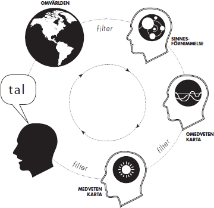

Medvetandet uppstår kanske när hjärnans simulering av världen blivit så fullständig att den måste inbegripa en modell av sig själv.
Richard Dawkins, The Selfish Gene 1976
Vår hjärna fungerade ganska bra när vi levde på savannen i Afrika för ett par hundratusen år sedan. Den fungerar fortfarande på samma sätt, men vår miljö är extremt annorlunda och det ställer ibland till problem. Vi har utvecklats till att snabbt kunna upptäcka faror och reagera på dessa, och vi har utvecklats till att kunna upptäcka och skaffa sådant som är bra för oss. Utan att vi är medvetna om det söker hjärnan hela tiden efter bra och dåliga saker, men även om vårt omedvetna är bra på mycket så är det mindre bra på att bedöma den faktiska innebörden. Till skillnad från det rationella medvetandet fungerar vårt omedvetna sinne snarare känslostyrt och eftersom vårt omedvetna i större utsträckning styr våra handlingar är det svårt att ändra ett invant beteende med endast karaktär och viljestyrka.
Rent logiskt vet vi till exempel att det är ganska säkert att flyga och att det är mycket farligare att åka bil. Ändå är långt fler rädda för att flyga. Logik biter inte på känslor och sällan ens på våra beteenden och om fantasin och förnuftet är i konflikt vinner alltid fantasin. Om du har en planka liggande på golvet så är det ingen svårighet att gå på den från ena änden till den andra utan att trampa utanför. Om du lägger samma planka mellan två höghus blir det genast svårare (även om vi bortser från vind och andra yttre faktorer). Det beror på att hjärnan varnar dig genom att fantisera om vad som skulle kunna hända om du ramlade ner.
VAD ÄR MEDVETANDET?
Den enklaste och mest gångbara definitionen av medvetandet är: Det vi för tillfället lägger märke till. Det vi vet om att vi vet. Vi kan flytta vår uppmärksamhet väldigt snabbt, men egentligen kan vi bara vara medvetna om väldigt lite i ett givet ögonblick.
Även om vi gärna ser oss själva som rationellt beslutsfattande individer, sker alltså majoriteten av vårt beslutsfattande på en omedveten nivå. Redan på 1800-talet upptäckte filosofen William Hamilton att om man kastar ett antal kulor på golvet får man svårt att överblicka fler än sju utan att bli förvirrad. Vårt medvetande kan alltså hålla reda på ungefär sju bitar information i ett givet ögonblick. Samtidigt vet vi att vi tar in minst en miljon gånger så mycket information via våra fem sinnen. Vi processar informationen på en omedveten nivå. Just nu kanske du inte lägger märke till alla ljud som omger dig, hur du upplever temperaturen där du befinner dig eller hur kläderna du har på dig känns mot kroppen. Naturligtvis kan du flytta medvetandet till just dessa saker när jag nämner dem, men innan dess var de förmodligen omedvetna för dig.
Många saker kräver dessutom att vi gör dem utan att tänka medvetet på dem. När min bror skulle ta körkort bad han mig om hjälp. Jag fick helt enkelt ge honom de första lektionerna på en öde parkeringsplats. Jag förklarade hur allt fungerade; koppling, gas, broms, växelspak. Jag instruerade honom att trycka ner kopplingen, lägga i ettan och försiktigt trycka på gasen samtidigt som han långsamt släppte kopplingen. Efter några försök gick det hyfsat och när dagens lektion var över skulle jag köra hem. Jag har aldrig kört bil så dåligt som på hemvägen. Fick motorstopp och hade svårt med det mesta. Anledningen var förmodligen att jag hade börjat tänka medvetet på något som normalt sker på en omedveten nivå.
När du ska lära dig en ny färdighet som att köra bil, cykla eller spela tennis behöver du från början tänka på en mängd olika saker: Hur du till exempel ska luta cykeln och anpassa farten för att hålla balansen, hur du ska trampa pedalerna bakåt för att bromsa och så vidare. Du övar och provar och kanske ramlar du några gånger, men plötsligt så bara sitter det. Och från den dagen behöver du inte längre tänka på hur du gör. Du kan cykla samtidigt som du funderar på vad du ska äta till middag. Det har blivit en automatisk omedveten process, ett mönster.
Detta är ett exempel på hur vi lär oss något som sedan blir en omedveten kunskap. Om du, som jag gjorde när jag skulle lära min bror köra bil, börjar medvetandegöra det du naturligt gör omedvetet kommer du att göra det sämre.
Vi kan alltså lära oss saker medvetet så att de sedan blir ett omedvetet mönster. Men vi lär oss ännu mer omedvetet, mycket under uppväxten, men även i vuxen ålder. Vi lär oss omedvetna mentala strategier för att minnas, för att sortera saker efter betydelse, för att skilja på vad som hände för ett år sedan och vad vi ska göra nästa vecka, för att motivera oss själva och annat. Ofta fungerar dessa strategier hyfsat, men ibland kan de ställa till problem. Eftersom vårt omedvetna gärna behåller ett mönster så hjälper det inte om vi medvetet förstår att det är kontraproduktivt. Vi måste då påverka hjärnan att göra som vi vill, och precis det kommer du att få lära dig i denna bok. Och du kommer förmodligen bli förvånad över hur enkelt det är.
HUR GÖR DU?
En kursdeltagare berättade att han använt ett knep för att vinna över sin golfpartner. Han hade helt enkelt ställt frågan: ”Andas du in eller ut när du slår swingen?” Frågan tvingade golfpartnern att tänka medvetet på något han normalt gjorde omedvetet och han spelade den sämsta rundan någonsin vilket gjorde att vår kursdeltagare för en gångs skull vann.
INSTALLERA NYA PROGRAM
Vårt omedvetna kan liknas vid en dator som programmerar sig själv utifrån de resultaten som den får. Om något går bra vill hjärnan göra mer av det, om något går illa vill den undvika det. Den största delen av programmeringen sker under uppväxten, men det som var viktigt och fungerade då kanske inte är lika relevant i dag. Ett barn som till exempel inte lärt sig hemläxan måste kanske som strategi försöka hålla sig så osynligt som möjligt under lektionerna. Detta blir ett program för att klara sig, men kan sedan i vuxen ålder ställa till problem. På ett möte är det till exempel ingen bra strategi att försöka synas så lite som möjligt.
Ibland har du också, som vi tidigare konstaterat, medvetet programmerat din dator. När du lärde dig cykla eller knyta skorna var det först en medveten process, som genom övning och repetition blev till ett omedvetet program. Det blir efterhand programmen som styr datorn och om ingen lägger sig i fortsätter den att använda samma program, med små justeringar då och då.
Många gånger är detta en stor tillgång som hjälper oss att navigera i världen och räddar oss från att drunkna i nya intryck. Men ibland ställer det även till det, och för att kunna hitta mer konstruktiva förhållningssätt och lösningar krävs det att vi förstår och synliggör de omedvetna mönster som alltför ofta styr oss mot vår medvetna logik.
Ditt omedvetna styrs framför allt av känslor och vanor och som tur är kan vårt omedvetna inte skilja på fantasi och verklighet (och ännu större tur är det att vi medvetet kan göra det). Därför kan vi använda vårt medvetande till att fantisera om hur vi vill vara, vad vi vill uppnå, vad vi vill strunta i och så vidare. Vi kan även koppla känslor till dessa förändringar och på så sätt ytterligare förstärka dem. Särskilt under hypnos får våra fantasier stor effekt.
Neurolingvistisk Programmering
Vad är det som gör att vissa personer lyckas och blir framgångsrika inom sina områden medan andra inte lyckas? Den frågan ställde sig Richard Bandler och John Grinder när de på 70-talet började studera framgångsrika terapeuter med inställningen att om andra gör på samma sätt bör de få samma framgångsrika resultat. I stället för att fråga dessa personer hur de gjorde valde de att studera dem. Utifrån dessa studier skapade de modeller för framgång, en process som de kallade modellering. Samlingsnamnet för dessa metoder blev Neurolingvistisk programmering, en term som syftar på hur vi med språket, lingvistiken, kan påverka våra tankar och nervsystemet, neurologin, så att de kan fungera på ett mer effektivt sätt. Detta kallas programmering.
Med hjälp av NLP kan vi ändra de mentala program som inte ger de resultat vi vill ha. NLP handlar till stor del om strukturen i det subjektiva och omedvetna tänkandet.
NLP
NLP står för Neurolingvistisk programmering och arbetades fram på sjuttiotalet av Richard Bandler och John Grinder. De började med att studera framgångsrika terapeuter med inställningen att om andra gör på samma sätt bör de få samma resultat. En person de studerade var den berömda hypnotisören Milton H. Erickson.
De gick sedan vidare och studerade framgångsrika människor inom en rad olika områden, utvecklade teorier och modeller för att förstå och förändra de subjektiva tankemönster som påverkar våra beteenden.
NLP innefattar ett antal mycket effektiva verktyg för att skapa positiva förändringar hos människor och används i dag av toppcoacher över hela världen. Mycket av det du kommer att lära dig i denna bok bygger på NLP.
Övning
Knäpp dina händer. Ändra nu positionen på alla fingrarna så att den hand som hade tummen överst nu har tummen under. Observera att det inte räcker med att bara flytta tummarna utan du måste flytta hela händerna. Lägg märke till hur ovant det känns.
Trygghet finns i vanor och inlärning i det ovana. När vi ska lära oss något nytt är det bra om vi kan befinna oss i en ovan position. Nästa gång du lyssnar på en föreläsning och vill lära dig något nytt prova att sitta på en annan plats än du är van vid, att knäppa händerna eller korsa armarna på ”fel” sätt.
KAMELER OCH PAPPFIGURER
Innan den 6:e maj 1954 hade ingen lyckats springa en engelsk mil på under fyra minuter. Många ansåg det till och med som en fysisk omöjlighet för en människa. Det tidigare världsrekordet på 4.01 hade stått sig i tio år och man talade om den magiska fyraminutersgränsen. Men så kom Bannister. En gråmulen majdag sprang han i mål på 3.59,4. Han gjorde vad ingen tidigare lyckats med. Två år senare hade otaliga personer slagit Bannisters omöjliga rekord. Hur är det egentligen möjligt?
Exemplet kan tyckas banalt, men historien om Bannister illustrerar en otvivelaktig sanning: Våra begränsningar är inlärda, de är en del av vår subjektiva sanning. Om vi tror att något är omöjligt så är det det.
En grundtes inom NLP är att vårt handlande styrs av vår subjektiva uppfattning av omvärlden snarare än en objektiv verklighet. Vårt handlande är alltså beroende av vår tolkning av omvärlden och oftast tror vi att denna tolkning är en faktisk verklighet.
När jag och min familj bilade till Öland var vi tvungna att stanna och tanka. När jag svängde av till en obemannad bensinstation såg min hustru, Malena, och jag samma märkliga syn. Någon hade ställt ett antal pappfigurer föreställande kameler mot staketet som gränsade till en äng. Vi skojade lite om det när vi plötsligt upptäckte samma sak. Det var inte pappfigurer utan levande kameler.
Vi har alla en karta av verkligheten i vår egen hjärna. När vi tolkar våra upplevelser och erfarenheter skapas denna karta. Sedan reagerar och handlar vi utifrån den. Oftast fungerar det bra, men många gånger kan kartan begränsa oss. Normalt försöker vi in i det längsta få verkligheten att stämma överens med kartan, snarare än att ändra kartan. I Sverige ska det inte stå kameler vid en bensinmack, så våra hjärnor försökte passa in verkligheten i våra kartor: pappfigurer. Ända tills pappfigurerna hade rört sig lite väl mycket och vi var tvungna att se dem som levande kameler. Hade vi mött samma syn vid en bensinmack i Dubai så hade vi direkt sett dem som levande kameler. Där hade de passat in i kartan.
Eftersom vi handlar och fattar beslut utifrån kartan snarare än utifrån en objektiv verklighet är det mycket effektivt att ändra kartan så att vi får fler möjligheter. Om du har en mental karta som är fri från onödiga begränsningar kan du släppa loss din fulla potential. En stor del av kartan är omedveten och med hjälp av hypnos kan du förändra den så att den bättre hjälper dig att uppnå det du vill.
KARTAN OCH SJÄLVBILDEN
En bekant till mig, Jola Sigmond, har kanske högst IQ i världen. Redan under uppväxten visste han att han hade hög intelligens, men han visste också att han var totalt omusikalisk. Varje försök till att sjunga eller spela ett instrument ledde till ett konstaterande om att han var tondöv. I vuxen ålder fick han möjlighet att en gång för alla få detta faktum bevisat. Han var på ett museum någonstans i Europa och hittade en apparat som testade hur pass tonsäker man är. Han gjorde sitt bästa och var övertygad om att hans vänner skulle få sig ett gott skratt. Resultatet fick honom att häpna, han hade en stor tonsäkerhet. Förmodligen har även du begränsande ”sanningar” om dig själv och nu är det dags att börja ifrågasätta dessa och skapa en ny karta.

En viktig del av vår inre karta är det vi kallar självbild, alltså hur vi betraktar oss själva, men även hur vi tror att andra tänker om oss. Eftersom Jola sedan barnsben fått höra att han var totalt omusikalisk var han övertygad om att det var sant.
Lyckligtvis kan även positiva erfarenheter fungera på samma sätt. När jag var barn tillhörde jag inte de starka grabbarna. Jag var ganska liten och spinkig, men jag var riktigt bra på en sak: armbrytning. Jag berättade detta för min hustru Malena för några år sedan och kom ihåg första gången jag hade upptäckt att jag var en hejare på just armbrytning. Jag tror jag var tolv år när min farbror Leffe skulle lära mig att bryta arm. Han förklarade att om jag bara släppte efter några centimeter så kunde jag hitta ett läge där jag kunde ”låsa” armen. Väl i det läget kunde jag sedan trötta ut motståndaren och när jag trodde att min motståndare var tillräckligt utmattad var det bara att sätta in stöten. Jag frågade om jag fick prova på Leffe och efter bara några sekunder hade han gått på sitt eget knep. Jag var i min låsta position och han började bli trött. Jag tänkte ”nu” och tog i allt vad jag orkade. Hans hand var bara några centimeter från bordet och jag fick uppbåda alla mina krafter, men till slut hade jag lyckats.
Samtidigt som jag berättade denna historia för Malena inser jag en sak: Jag var tolv år och Leffe var en vuxen man. Jag kan aldrig på riktigt ha vunnit över honom, men han måste ha spelat så bra att jag trodde att jag vann. I min verklighet blev detta en sanning: ”Jag är bra på armbrytning” och naturligtvis utstrålade jag också denna självsäkerhet när jag skulle bryta arm med killarna i klassen. Kom igen bara, jag slog farbror Leffe så du har inte en chans …
FÄRGADE GLASÖGON
För att skapa vår mentala karta av omvärlden måste vi filtrera information. Dessa filter blir som att ta på sig ett par färgade glasögon. Ibland ser vi saker i ett rosa skimmer och andra gånger är allt grått. Filtreringen sker främst via tre olika processer:
Bortsortering, som alltså handlar om att vi måste välja var vi har uppmärksamheten riktad, på bekostnad av annan information. När vi skapar vår karta av omvärlden måste vi helt enkelt sortera bort information.
Förvrängning, som innebär att vi ger något en mening som det kanske inte alls har. Om någon skulle säga till mig efter en föreläsning att publiken verkade lite trött så kanske jag tolkar det som om personen i fråga tyckte att jag gjorde dåligt ifrån mig. Men meningen kunde mycket väl ha varit att jag gjorde ett fantastiskt jobb som fick med publiken trots att den verkade trött.
Generalisering, en process som gör att vi inte hela tiden måste börja om från början. Vi generaliserar hela tiden; när vi väl lärt oss hur en dörr fungerar behöver vi inte varje gång vi kommer fram till en ny dörr fundera på hur vi ska ta oss förbi. Vi vet hur en bil ser ut och även om vi ser en ny modell i en annorlunda färg så skulle vi ändå känna igen den som en bil. Generalisering är en viktig process, men den medför ibland problem. Om jag till exempel misslyckas med något och generaliserar så kanske jag tror att jag alltid kommer att misslyckas med liknande saker. På samma sätt fungerar det med fobier, som helt enkelt är en övergeneralisering. Jag blir rädd för en spindel vid ett tillfälle och tycker att den ser obehaglig ut. En rysning genom kroppen. Aha! tänker min hjärna, spindlar är farliga. Och nästa gång jag ser en spindel känner jag samma obehag igen. Till slut gäller det även de minsta spindlar, eller kanske till och med blotta bilden av en spindel. Och trots att jag rent logiskt vet att en svensk spindel är helt ofarligt blir jag ändå rädd.
I kommunikation med andra människor har vi ytterligare ett filtersystem, nämligen vårt språk. För att uttrycka en tanke i ord måste vi förenkla den. Om min dotter säger att hon vill ha en speciell telefon eftersom ”alla har en sådan” är detta en generalisering. Ordet ”alla” betyder inte alla i världen, inte ens alla i skolan och förmodligen inte heller alla i klassen utan bara några personer.
TA KONTROLLEN ÖVER DITT OMEDVETNA
Även om alla vanor och mentala strategier bottnar i omedvetna processer betyder det inte att vi inte kan bli medvetna om dem, bara att vi oftast inte lägger märke till dem. Det vi gör naturligt omedvetet känns just naturligt och om du vill påverka dig själv i en positiv riktning måste du alltså påverka ditt omedvetna, de mer eller mindre automatiska processer som styr dig i vardagen.
Alltför ofta ställer vi frågan ”Varför?” om vi har ett problem och mycket sällan leder den frågan till någon lösning. I stället är det nästan alltid mer effektivt att ställa frågan ”Hur?”. Hur ska jag lösa detta? Hur vill jag att det ska vara i stället? Eller till och med: Hur gör jag för att ha detta problem och hur kan jag göra annorlunda?
Om en person till exempel säger till dig att han eller hon inte lyckas lösa en uppgift, kanske du i all välmening frågar ”Varför kan du inte lösa uppgiften?” Personen kommer då medvetet eller omedvetet söka efter svar på frågan varför, som i sig förutsätter att uppgiften inte kan lösas. En mer effektiv fråga skulle kanske i detta fall vara ”Hur skulle du kunna lösa uppgiften?” eller ”Vad behöver du för att kunna lösa uppgiften?”
För att styra dig själv och för att få det att upplevas som naturligt måste du alltså påverka ditt omedvetna, de mer eller mindre automatiska processer som styr dig i vardagen. Mycket i de följande kapitlen handlar om enkla och effektiva metoder för att göra just detta. Och när du gör det börjar du också påverka din karta, expandera den och ge dig själv fler möjligheter.
I nästa kapitel tar vi hjälp av den så kallade helhetsmodellen som inte bara hjälper oss att på ett djupare sätt förstå våra beteenden och varför vi gör som vi gör, utan också att förändra det som inte fungerar på topp.
MEDVETANDETS
FÖRDRÖJNING
Resultaten av Benjamin Libets experiment var mycket märkliga. Om du ska utföra en enkel medveten handling som till exempel att böja ett finger så måste den handlingen på något sätt förberedas i hjärnan; efter det att du har bestämt dig och innan fingret böjs. Det var dessa tidsskillnader Libet ville mäta. Experimentet var egentligen ganska enkelt. För att ta reda på när försökspersonerna medvetet bestämde sig använde han något som kallas Wundts komplikationsur. Enkelt beskrivet är det en klocka med en visare som går mycket fort. Om försökspersonen säger att han bestämde sig när visaren stod på halv så har man en ganska exakt tidsangivelse. För att mäta när rörelsen förbereddes i hjärnan använde han EEG – ett redskap som mäter den elektriska aktiviteten i hjärnan. Och att mäta när fingret väl böjde sig var en enkel sak.
Resultatet var förbluffande: Rörelsen att böja fingret förbereddes i hjärnan innan man medvetet bestämde sig för att böja det. Och ganska långt innan; nästan en halv sekund!
Alla våra beslut, även medvetna, startar med en omedveten impuls. Innebär det att vi inte har någon fri vilja? Nej, Libets experiment visade också att försökspersonerna kunde välja bort en impuls. När impulsen att böja fingret hade registrerats i hjärnan kunde försökspersonerna lika gärna välja att låta bli att agera på den, och det här är kanske en av anledningarna till att suggestioner är så effektiva. De startar en impuls i hjärnan och för att låta bli att handla måste vi medvetet eller omedvetet välja bort den. Så om jag föreslår att din högra stortå ska rycka till, så startar detta förslag en omedveten impuls som du kan välja att agera på eller låta bli. Alltså har vi en fri vilja, men den är viljan att välja bort. Medvetandet är en form av illusion, men för enkelhets skull kommer vi även i denna bok att använda den illusionen och säga att vi gör vissa saker medvetet.
Som tur är så är det endast en bråkdel av våra beslut som är medvetna. Vi fattar cirka femtiotusen beslut om dagen och vi skulle inte fungera om alla dessa beslut var medvetna. I stället gör vi saker enligt invanda mönster, på rutin och efter vana. Och när vi gör saker omedvetet känns det naturligt. När vi med vårt medvetande ska gå emot vårt omedvetna känns det onaturligt.
Nästan alla mina klienter vill ha hjälp med något problem som sker automatiskt och som de inte klarar av att påverka medvetet. Det kan vara en ologiskt fobi, tvångsbeteenden eller att sluta röka. Alla vet i dag att det är livsfarligt att röka, men ändå är det för många otroligt svårt att sluta. Det beror helt enkelt på att det blivit en vana. Och för de flesta är det helt omöjligt att sluta bara med viljekraft, att tvinga sig själv att låta bli något som hjärnan vill ha. Därför är det alltid enklast att påverka vårt omedvetna när vi vill ha en förändring. På så sätt kommer förändringen att kännas naturlig och självklar.